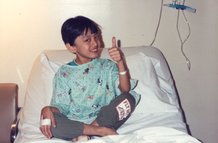

During my M.A. in Social Design at MICA, I met a representative from the Greater Baltimore Asthma Alliance (GBAA) who mentioned that Baltimore is one of the worst cities for asthma sufferers. The woman from GBAA mentioned asthma sufferers often lose the boxes for their asthma inhalers which contain important information about how a patient should manage her/his condition. Although this seemed like a very tempting design project to jump into-I knew that I needed to understand more about asthma and asthma treatment. I sought to uncover, how can design influence asthma management and what can a designer do to make an impact in this space.

01.
Compliance
One of the biggest problems for asthma patients is following a doctor’s orders to take medication regularly and properly. Often, extenuating circumstances exist, such as inadequate access to health care services, which prevent a patient from taking their medication consistently, even though they know about the consequences of not taking medications.
02. Education
Because of the prevalence of asthma, hearsay about how to treat and manage the condition is taken as truth. I met a number of children with asthma who reported that their parents would give them their sibling’s asthma medication because it was “all the same.” The truth is, not all asthma medication is created equal, and taking one form of medication improperly during a medical emergency can be lethal to a patient. Part of the education component also requires knowledge of how parents and educators can recognize asthma symptoms early in their children and students. Preventative measures and early intervention can help minimize the impact of asthma on a young person’s life.
03. Preventative care is key
Preventing an asthma attack is doable but patients must know about what triggers attacks in order to prevent them.
Design Strategies 01. pollen In an effort to address the compliance issue, I have designed a concept app called Pollen. The app is a preventative tool for anyone suffering from allergies or asthma. It allows a user to check the current pollen count and in doing so, a user can determine if she/he needs to take allergy medications for the day. 2. Breathe Easy - A concept app and website that helps an asthma patient maintain her/his condition. The app reminds a user to take her/his medication on time and allows a user to record her/his peak flow readings, which can be useful in predicting when an individual would have an attack. The app has an “emergency mode” which allows a patient to call 911 while viewing a guided breathing visual intended to slow down one’s breathing pattern. 3. Trigger List - A website that allows you to choose from a list of common allergy and asthma triggers. Produces results that allow you to stay ahead of your asthma or allergies. 4. Breathing Sounds Series – Motion graphics experiment in breath sounds. Teaching tool for educators and parents to understand and identify early symptoms of asthma.